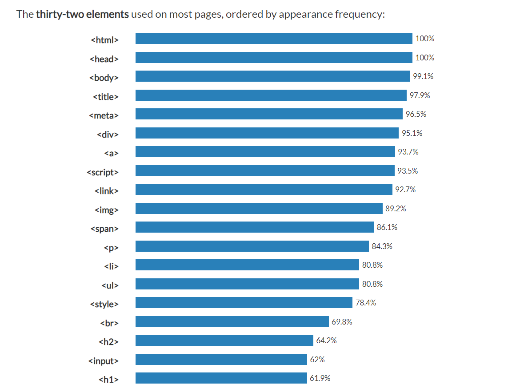
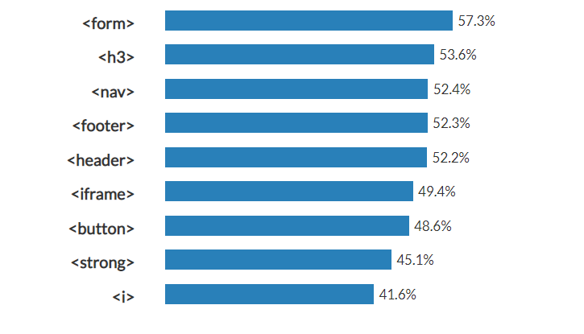
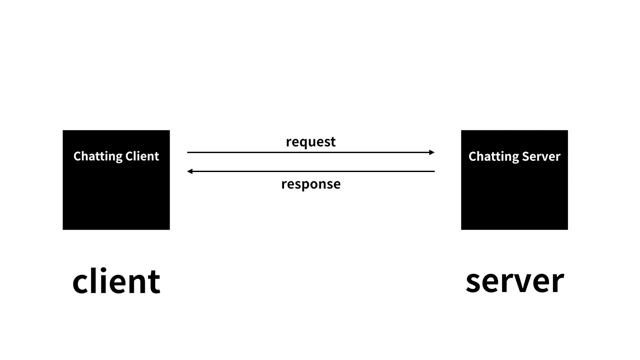
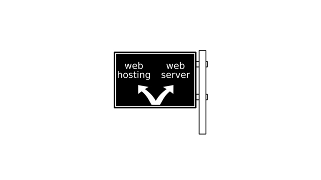

html
html-첫째 날[21.01.02]
진도: ~웹사이트 완성까지
HTML의 장점
1.쉽다
2.중요하다
3.Public Domain이다(저작권 X)
html 문법은 기본적으로 태그와 태그를 보충해주는 속성으로 이루어진다. 태그는 150개 이상이 있지만, 자주 사용되는 태그는 한정되어 있기 때문에 그것만 알아둬도 충분하다!  
태그 설명
- strong-글씨를 진하게 표시한다
- u-밑줄을 치고 싶다
- heading(h1, h2, h3...)-숫자가 작을수록 글씨의 크기와 진하기↑, 줄바꿈 O
- p-단락(paragraph) 표시 (더 간격을 두고 싶다면 style="margin-top:40px" 등 css 문법으로 가능)
- br-줄바꿈
- img-사진 업로드 (올리고 싶은 사진의 주소를 src="~~" 에 넣는다)
- li-목록 표시
- ol-ordered list 자동으로 번호가 달리는 li의 부모 태그
- ul-unordered list 번호가 달리지 않는 li의 부모 태ㄱ그
- title-제목 tab 창에 뜨는 이름
- meta-어떤 방식으로 html 파일 열 것이냐 (charset="utf-8"을 넣으면 utf-8로 연다)
- head-본문을 설명하는 태그들(title, meta)을 한번에 묶는 태그
- body-본문을 한번에 묶는 태그
- html-head와 body를 묶는 최상위 태그 (html 태그 위에 "이 문서는 html 형식임"을 의미하는 것을 관용적으로 써준다. (!DOCTYPE html)
- a-링크를 달 수 있는 태그 (href="~~~" 에 링크 넣으면 연결됨 href=hyper text reference) (target="_blank" 링크의 페이지를 새로운 창에서 띄움) (title="~~" 링크를 누르기 전 커서를 갖다대면 어떤 내용인지 알려줌)
html-둘째 날[21.01.03]
진도: ~수업을 마치며 3까지
웹 호스팅과 웹 서버

시스템 프로그래밍과 컴퓨터 구조 및 시스템에서 열심히 배웠듯이, client는 server와 여러가지를 주고 받으며 상호작용한다. 웹의 경우에는 html을 호출하고 주는 경우다. 그리고 server에 의해 내 컴퓨터에 있는 문서를 전 세계가 볼 수 있도록 할 수 있다.

그런 server의 역할을 누가 하느냐에 따라 web hosting과 web server로 나눌 수 있다. web hosting의 경우는, 웹 호스팅 업체와 같은 회사에 맡기는 것으로 비교적 쉽다는 장점이 있다. 단적으로 github가 그 예시다. 두 번째로 web server는 사용자가 직접 그 역할을 하는 것이다. 이 방법은 까다롭고 어렵고 컴퓨터를 계속 커놔야 한다는 단점이 있으나, 그 과정 속에서 배우는 것이 많다고 한다.
나는 시간 관계상, 웹 호스팅으로만 구현해봤다. 나중에 웹 서버도 하는 걸로. 꼭 한 번 직접 해보고 싶다!
이렇게 해서 html이 끝났다! 처음으로 독학하면서 재밌다고 느꼈던 것 같다. 단순히 듣는 것에서 그치지 않고 지금처럼 직접 내가 나의 필요에 맞는 html문서를 작성해나갔던 게 그 흥미의 원인인가보다. 이 웹사이트를 좀 더 근사하게 꾸미기 위해 얼른 css도 배우러 가고 싶다! 이얏호~